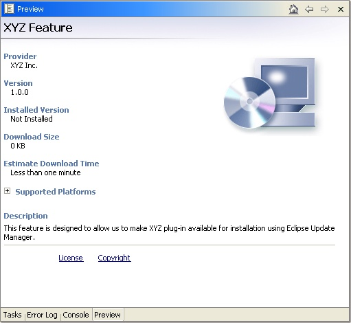
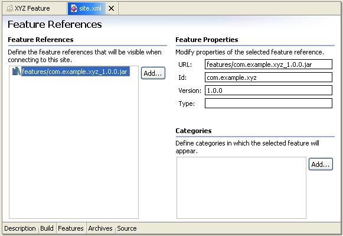
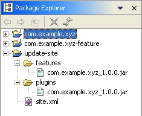
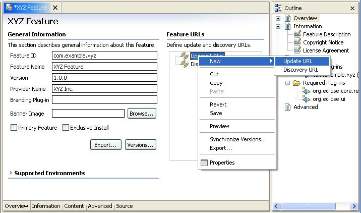
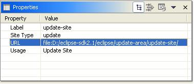
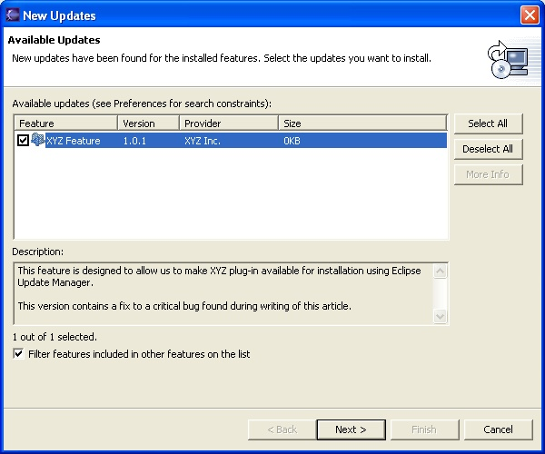

| Eclipse Corner Article |

Summary
This article shows you how to create and publish bundles of plug-ins (called features) to an update site so that customers can download and install them directly into Eclipse using the Eclipse update manager. This has many advantages over the low tech way of delivering new or updated plug-ins in a zip file that someone manually unzips into the directory where Eclipse is installed.By Dejan Glozic, IBM and Dorian Birsan, IBM
August 27, 2003 (Appendix added January 13, 2004)
More often than not, software products are out of date as soon as they appear on the market: new features and bug fixes are already available before the CD's hit the shelves and web sites provide links for downloading. Eclipse based products are no different. Over the course of a project, remember how many times you exchanged plug-ins using email attachments with the suggestion 'just unzip into the Eclipse directory'. Of course, it works. But would you sell a product with 500 plug-ins for $2999, then send updates to customers by email with similar instructions? Or post hundreds of zip files on a web site, along with installation instructions ?
In the real world where commercial products are built on top of Eclipse technology, new plug-ins and updates to existing ones must be delivered in a more convenient way. Another consequence of charging people for software is that there are legal ramifications to reckon with. For this reason, Eclipse platform has a component that deals with installing and updating plug-ins that is both convenient and keeps your company's lawyers happy.
We already know that the basic building block of Eclipse functionality is a plug-in. Its manifest contains all the information required by Eclipse to successfully load it, contribute into the application and run. However, it is not particularly well suited for distribution. One reason is that a plug-in is functionally too fine-grained. We always start small, but real production quality plug-ins rarely come alone. A more realistic situation is to have several plug-ins working together to perform a useful function. Example: Java Tools consists of 9 plug-ins, PDE has 5 etc. These plug-ins require each other and go together - their usefulness is limited in isolation.
To represent a unit of useful functionality Eclipse has a notion of features. Instead of saying 'take these 9 plug-ins that go together', you should be able to say 'take Java Tools'.
The role of features is to allow providers to make collections of plug-ins that logically go together. These collections are made in such a way as to provide for easy transport over the network, have necessary legal and security mechanisms, and are modular to allow hierarchical product building.
Features are designed to help in performing the three major tasks:
Although features group plug-ins together, they are not containers. All the plug-ins are installed in the 'plugins' directory in the Eclipse product location. Features simply reference plug-ins (and fragments) that belong to them. This important property plays a major role in optimizing performance when downloading over the network. It allows Eclipse to download only the plug-ins that have actually changed between the two feature versions. It is easy to imagine why downloading 20 new plug-ins out of 500 makes a huge difference in this scenario.
As plug-ins have plug-in manifests, features have feature manifests. The file name is feature.xml and it can contain the following things (the full DTD can be found in the reference section of the Eclipse platform documentation):
This list is not complete but is fairly representative. A manifest file can contain translatable content but it is better to place it in feature_<NL>.properties files that will be picked as Java resource bundles based on the current locale. This is analogous to the way NL content is handled for plug-ins.
Features exist in two major places and incarnations: installed (in the Eclipse product) and packaged (on the server as part of the update site).
Imagine for a second that Eclipse is completely empty i.e. has no plug-ins and features. To get any functionality into it, you would need to download features from the server (see task #1 above). For this to happen, features must be published on a HTTP server in the following way:
Features and plug-ins are packaged into archives for easy transportation over the network. In addition, archives can be digitally signed. If you are charging for your software and want to protect your customers as they download updates from your site, it is a good idea to sign your archives using valid certificates. If not, Eclipse Update will warn your users that they are about to install an unsigned feature (a scary message indeed).
 Security issues with
features should not be underestimated. Eclipse allows users to download new
functionality from remote servers. A rogue plug-in can act as a perfect Trojan
horse. It can look innocent enough and provide useful function while spawning
threads in the background with full access to the local file system and the
Internet (if connected). Beware of installing features from update sites you do
not trust.
Security issues with
features should not be underestimated. Eclipse allows users to download new
functionality from remote servers. A rogue plug-in can act as a perfect Trojan
horse. It can look innocent enough and provide useful function while spawning
threads in the background with full access to the local file system and the
Internet (if connected). Beware of installing features from update sites you do
not trust.
By using Update Manager, we can connect to the update site and examine its content (we will talk more about this later in the article). Once we find features we want to install, we can bring up the install wizard and let it complete the installation.
After we restart Eclipse, features and their corresponding plug-ins will be physically present in our product location. Features and plug-ins will not be archives any more: they will now be installed. All the features will be in the 'features' directory, and all the plug-ins in the 'plugins' directory.
Of course, Eclipse is never empty to begin with. Every Eclipse product starts its life with a number of plug-ins and features. They were not installed using Update Manager - they were placed there as a baseline content. Initial update operations will be performed using this baseline as a reference.
The easiest way to use Eclipse Update starting from a fresh Eclipse installation is to see if there are new versions of currently installed features available. Features typically have a URL to the site where updates can be found. When Help>Software Updates>New Updates is selected, Eclipse will connect to these update sites and try to find new versions of the already installed features. If found, they will be presented in the installation wizard. After accepting the license agreements, pressing Finish and completing the installation, your Eclipse product will have the latest updates.
It is important to note that this operation is performed by Eclipse product customers - people that bought the product and want to have the latest service update of it. If you are the product provider, it is your responsibility to build the features and place them on the update site for your customers to find. In the following sections, we will learn how.
Now that we understand the basics of the Eclipse Update mechanism, it is time to see it in action. We will use the 'Hello, World' plug-in, create a feature for it, publish it on an update site and then install it into another Eclipse. Since plug-in development is not the focus of this article, we will take advantage of PDE to do it fast.
 The goal of our example is
to use one Eclipse product as a development environment, and publish a feature
that can be installed into another Eclipse product. In order to keep things
clean, we suggest you install two copies of Eclipse in your file system - one to
use for development, and another to act as a product. Download the 2.1.1 version
of Eclipse SDK from Eclipse.org
and unzip it into the two different locations.
The goal of our example is
to use one Eclipse product as a development environment, and publish a feature
that can be installed into another Eclipse product. In order to keep things
clean, we suggest you install two copies of Eclipse in your file system - one to
use for development, and another to act as a product. Download the 2.1.1 version
of Eclipse SDK from Eclipse.org
and unzip it into the two different locations.
We will start by making the plug-in project by selecting New>Project>Plug-in Development>Plug-in Project. We will choose 'com.example.xyz' for the project name (this will become our plug-in ID as well). We will accept the defaults and select 'Hello, World' template from the Plug-in Code Generators page.
After pressing Finish, we should have the plug-in project created and visible in the Package Explorer. Newly created manifest file will be opened for editing in the PDE manifest editor. We should take this opportunity to test our new plug-in by following the 'Run...' hyperlink from the Welcome editor page. The test Eclipse instance that will appear should contain a tool bar button that will greet us with a 'Hello, World' message box when pressed. Our goal is to get our plug-in packaged, published and installed into another Eclipse so that we can see the same message box there.
Before we move on to creating a feature, we must perform one important step:
make sure all the files we need will end up in the packaged plug-in. An
important file controls how plug-ins and features are built: build.properties.
It has been created by PDE wizard automatically, but it may not contain all the
things we need. In our particular case, 'Hello, World' wizard created
'icons' directory that we need to include in the
 bin.includes
variable as follows:
bin.includes
variable as follows:
bin.includes = plugin.xml,\
xyz.jar,\
icons/
source.xyz.jar = src/
Once we have the plug-in, know that it is working and ready to build, we will create a feature. To do so, select New>Project>Plug-in Development>Feature Project. We will use the same ID as for the plug-in but change the project name to avoid name collision in the workspace. We will choose 'com.example.xyz-feature'. After pressing Next, we will be able to change the ID into 'com.example.xyz', name into 'XYZ Feature' and provider into 'XYZ Inc'. Pressing Next again will take us to the page where we can pick plug-ins and fragments that should belong to the feature. We will select the only plug-in available (com.example.xyz). At this point we can press Finish to get our project created.
The wizard operation is analogous to the one for plug-in projects in that it creates the project and the necessary files, and opens the feature manifest for editing. The manifest editor is the usual PDE variety which means that you don't need to know the exact XML DTD to be productive - you can use form pages exclusively.
Feature manifests can get complex in some cases, but we don't need to use all their capabilities for our little exercise. Our goal is to define the following:
 Switch to the Information
page and
Switch to the Information
page and
Now save the file, switch to the Overview page and select Preview from the pop-up menu. This handy function taps into Eclipse Update API to test if the feature we are creating will be liked by Update Manager when packaged and deployed. If everything is fine, you should see the Preview (part of the Update Manager) open, showing you the feature properties. You should be able to see the description, follow the 'License' and 'Copyright' hyperlinks and see the correct name, provider and version (and above all, this demonstrates that the manifest file is loaded without errors by the Update XML parser):

Figure 4: Preview of the feature as it is being designed in the workspace.
Note that the actual size and location of the view will depend on the perspective in which it was opened. We made the view in Figure 4 taller to allow you to see it without the scroll bars. In most perspectives it opens stacked with the other views in the lower-right corner.Having created a plug-in and a feature, we need to build them and make them available on an Eclipse update site. The update site concept is very powerful and flexible, but requires some advanced programming in order to tap into that power. For this reason, Eclipse provides a default implementation of the required interfaces that makes feature publishing easier and programming-free.
We said earlier that in order to build a site, we need a site map (site.xml). In addition, we need to package features and plug-ins into JARs and place them alongside the map in the 'features' and 'plugins' directories, respectively. By placing these files and folders on an HTTP server connected to the Internet, you are making the site visible to Eclipse users around the world.
There are many ways to build an update site. Large products with automated builds can package features and plug-ins, upload them onto the server and update site.xml automatically. For smaller projects and for experimentation, PDE provides tooling for update site creation. It will come in handy for our example as well.
We will start by creating an update site project by selecting New>Project>Plug-in Development>Update Site Project. We will pick 'update-site' for a project name, but choose a non-default location for the project for the following reasons:
Very predictably, the wizard creates a new site project, site map and opens the file for editing in the usual PDE multi-page editor.
The first step is to connect the features in the workspace and our site. The update site manifest editor is actually a combination of an editor and a builder in that it keeps track of features in the workspace, builds them and packages them in a format required by the Update Manager. The packaged files are then placed directly into the site project in the required folders. To connect features and the site, we need to switch to the Build page and press Add... in Features To Build section. The wizard should contain 'com.example.xyz' feature (version 1.0.0) that is in our workspace. When we choose it and press Finish, this feature project is now added to the build map of this site.
Adding a feature project to the build map will not make it visible to people that connect to our site. It is possible to have features in the update site that are not visible. For example, if you build a complex feature that includes several smaller ones, you only need to make the root visible in the site. When users select your complex feature for installation, all the children will be recursively downloaded as part of the process.
To make our XYZ feature visible, we need to select the checkbox in the above mentioned section. You will notice that an entry appeared in the Outline under Features. Indeed, if you switch to Features page, you will see this entry in the list. What this means is that the feature will be visible to users who connect to our site and browse it. Note how the feature archive name is a combination of the feature ID and version. This way you can place many different versions of the same feature side by side:

Figure 5: Defining the features that will be visible when connecting to the site.
Our site description is now ready to be built. To do so, we will switch to the Build page and press the Build button. After the build operation has finished, you should have a JAR in both the 'features' and 'plugins' directory. Check that you have the following content in your Navigator or Package Explorer after the build operation. Note that Navigator shows all the resources, so you will also see a folder where build information is kept (.sitebuild). This folder is used by the site builder only and is hidden for a reason. It is used at development time only and plays no role in a published site.

Figure 6: Package Explorer view after building the update site.

You have probably noticed that there are two buttons in the Build page: Build and Rebuild All. Why two? The later is easy to understand: it unconditionally builds all the plug-ins and features in the build map. In contrast, the former builds only features and plug-ins that changed since the last build. Building features may take time if they reference many plug-ins, so it definitely makes life easier. However, it is not as fine-grain as incremental builders that run on resource changes, since the expectation is that you will not need them as often.
We can test our site without leaving the workspace. Update Manager treats local and remote sites equally (the only exception being that remote sites have an extra download step before you can access its files). We can use this property to go to our site and verify that we can browse it correctly. If we can, so will our users once we publish it on the server.
All you need to do is open Update Manager (Help>Software Updates>Update Manager), locate icon My Computer in Feature Updates and drill down into the location on the file system where our 'update-site' project folder is. You will notice that it is actually not represented as a folder in the view. Instead, it shows a pink diamond icon () used for update sites. This is a good sign - it means that the view recognized that this folder is in fact an update site and immediately switched into site browsing mode. You can browse the site right there, but a better way is to bookmark it (select it and choose Bookmark Location... from the pop-up menu). This will bookmark the site so that you don't have to drill down in the future.
If everything is OK, you should see Other (the default category) with one feature in it: XYZ Feature 1.0.0. When you select it, the feature properties should show up in the Preview.
 When creating
more complex sites, you would first create a category definition to help
people accessing your site see features classified into logical groups. That
way, categorized features will not appear under the Other folder, but under
their category folder.
When creating
more complex sites, you would first create a category definition to help
people accessing your site see features classified into logical groups. That
way, categorized features will not appear under the Other folder, but under
their category folder.
 As you are
testing your site over and over, remember to select Refresh from the
pop-up menu before making conclusions. Update Manager tries to be as efficient
as possible so it will not react to changes in the file system unless you force
it to drop the cached data and connect to the site anew.
As you are
testing your site over and over, remember to select Refresh from the
pop-up menu before making conclusions. Update Manager tries to be as efficient
as possible so it will not react to changes in the file system unless you force
it to drop the cached data and connect to the site anew.
There is one extra task we need to perform before publishing the site. It represents our investment in the future. Although our users can use Update Manager to navigate to the update site, find the new version and install it, it requires more knowledge and work than is really necessary. By implanting a URL that points at the update site, Eclipse can search for new updates automatically, with minimal user intervention.
Embedding a URL that points to the site with updates is easy, but you need to select the URL wisely. Once you ship the feature, the server must be located where you said it will be. You can change this URL in the subsequent versions of your feature, but do spend some time thinking about it - if you do, you will not need to change it often. For example, Eclipse.org update site is http://update.eclipse.org/updates/ and is unchanged since release 2.0.
Since in our example the site is local on the file system, we will use file protocol for the update URL. All we need is to add the update URL to our feature.xml:

On the Overview page of the feature manifest editor locate the
Feature URLs section. Choose New>Update URL from the pop-up
menu and edit the object properties in the property sheet when created. /p>

Figure 7: Setting the
Update URL for a feature
The URL path should match the directory where you defined your update site, so make sure you change the following URL if you copy/paste it:
file:D:/eclipse-sdk2.1/eclipse/update-area/update-site/

Figure 8: Setting the Update URL in the property sheet
 This step is not
needed if you are directly updating a site on the local file system or on a
local server, as it was discussed when creating
the update site project.
This step is not
needed if you are directly updating a site on the local file system or on a
local server, as it was discussed when creating
the update site project.
You can publish the site in many ways. If you do not have access to a server, the simplest way to publish it is to export the site project into a local directory, outside the Eclipse workspace.
A more powerful way to publish the site to a remote server is by using the optional Eclipse FTP and WebDAV Support feature available as a separate download from Eclipse.org. You can create a target for your update site project on the server, and upload deltas using FTP or WebDAV protocols whenever you rebuild the site. If your server is not enabled for FTP or WebDAV, then you'll have to manually deploy the site to the server. In this example we assume that your server is FTP-ready.
First, let's use the Update Manager to download the FTP and WebDAV Support: switch to the Update Manager, add a bookmark to http://update.eclipse.org/updates/, expand it, expand Eclipse SDK 2.1.0 category and find Eclipse FTP and WebDAV Support. Select the feature and press Install Now button in the Preview. It will download, install and configure this feature automatically. Restart when asked and that's it.
Now that our Eclipse workbench can act as an FTP client, we can prepare the site for publishing:
You have now established the target site. Changes you make in the workspace will be compared to the target and delta will be computed when upload is needed.
To upload, select the project and use 'Team->Synchronize with target' option. This will bring the familiar 'Synchronize' view used with CVS repositories. Select the desired branch or the root and 'Upload' the content to the server.
Let's now pretend that our feature is published and that we were told that there is this cool XYZ feature that is a 'must have'. To pretend successfully, we need to install another copy of Eclipse 2.1.1 SDK in a different location (to act as a product) and launch it. When it comes up, immediately switch to the Update Manager and create a bookmark in Feature Updates. If the site was published locally, drill down to the site location using My Computer and create a bookmark for it. If the site was published on a remote server, then create a Site bookmark to the appropriate site URL.
You should be able to expand this bookmark and see the same things as before when we tested the site. This time, we will go all the way and press the Install Now button. You should accept our fake license, accept the default location and press Finish. After restarting Eclipse, our XYZ Feature (and XYZ Plug-in) will be installed.
How to tell that everything went well? Check any of the following:
As it usually happens, after you successfully deploy the 1.0.0 version, it is likely you will need to provide bug fixes to your customers.
One very important thing to remember is that once you publish your plug-ins and features, any changes to their code must cause version increments. After you change one line of your code, it starts to differ from what people have installed on their machines, which means it is not the same version. In Eclipse, this is handled by creating a maintenance branch in the repository. This branch is used for fixes of the shipped code base while further development goes on unimpeded in the main development stream.
Since we found a bug, we will create a bug fix release. We started with version 1.0.0, so we will make 1.0.1 this time (increment only service portion of the version). We need to make a number of changes to the existing plug-in and feature, so make sure the 1.0.0 versions are saved somewhere.
We will start by editing plugin.xml of our plug-in project and incrementing its version to 1.0.1. In addition, we will modify com.example.xyz.actions.SampleAction.java file to show a different text in the message box: public void run(IAction action) {
MessageDialog.openInformation(
window.getShell(),
"Xyz Plug-in",
"Hello, UPDATED Eclipse world");
}This will take care of the plug-in. Next, we will handle the feature. First, open feature.xml again. Since we changed plug-in version, we must repair the broken reference in the feature: on the Content page remove the com.example.xyz plug-in and add it back (PDE will automatically handle this in a future Eclipse release). In addition, we must increment the feature version on the Overview page to 1.0.1, because Update compares feature versions when scanning for new updates. Finally, we will change the description of the feature to say something about the fix; add this text to the Feature Description section: This version contains a fix to a critical bug found during writing of this article.
Now that we updated the feature, we must rebuild everything and republish.
We will start by opening site.xml using the site map editor. When you switch to the Build page, note how the icon for the 'XYZ Feature 1.0.0' is gray and hollowed out. This indicates that we contain a reference to this feature but cannot find it in the workspace. This is OK - since this is shared project, there will always be features that we cannot find (because they are in other workspaces). We need to add our modified XYZ Feature 1.0.1 to this list and check the checkbox. This will add another feature entry to the site manifest.
When we switch to the Features page, we can indeed see this entry. Repeating what we did before, we will select this entry and add it to our category. After saving the file, we can select Build from the pop-up menu (no need to switch back to the Build page). If everything went well, you should now have TWO plug-ins in the 'plugins' folder and TWO features in the 'features' folder.
As before, we can preview the site using Update Manager (this is where bookmarking the site is paying off). You should now see two features (XYZ Feature 1.0.0 and 1.0.1) and switching between them should show differences in the description.
Finally, the fix is ready. This is where our decision to implant a URL that points at our update site is paying off. All the users need to do is select Help>Software Updates>New Updates and wait for the results.
 So far, our 'pretend'
Eclipse product has 'XYZ Feature 1.0.0' installed. When we select this command,
a progress monitor will show up, searching for new updates. It is shortly
replaced with a wizard showing the results of the search:
So far, our 'pretend'
Eclipse product has 'XYZ Feature 1.0.0' installed. When we select this command,
a progress monitor will show up, searching for new updates. It is shortly
replaced with a wizard showing the results of the search:

Figure 9: Result of the update search.
What happened? Eclipse checked currently installed features, connected to the update sites using URLs in feature manifests, and searched for features with the same ID but higher version. Since our site had a feature that matched this description, it showed up in the wizard. We can now proceed with the installation and the result will be the same as if we installed it from the Update Manager, only with fewer mouse clicks.
When you publish your features, you definitely want your users to follow this path because it is the most straightforward way of bringing the updates in.
 After
installing a new feature or updating an existing feature it is possible to go
back to a previous configuration state. Do this from the Configuration History
node in the Install Configuration view.
After
installing a new feature or updating an existing feature it is possible to go
back to a previous configuration state. Do this from the Configuration History
node in the Install Configuration view.
We hope this article makes you think twice about sending more 'just unzip ...' notes with attachments. Instead, your next note should read:
A new tool named XYZ Feature is now available for download from update site
http://xyz.example.com/updates/
Each subsequent note should simply be:
Version 1.0.1 of XYZ Feature is now available for
download from update site
http://xyz.example.com/updates/
You can
install it directly by selecting the New Updates
action.
More can be
done with Eclipse update. You can make a more complex feature by including several smaller ones, with some of
them optional. By providing patches, you can update branches of the complex
feature hierarchy, not just the root feature. You can also create a
branding plug-in and associate it with a feature to make your feature
stand out in a number of places in the workbench. If your feature is primary, that plug-in can also contain a splash
screen that replaces the default Eclipse splash. Finally, you can package a set
of features and plug-ins that represent a significant function and add it to
other Eclipse products during installation using linked extensions.
Our example only scratched the surface of update capabilities. As your code grows in complexity, so will your software update needs.
By Alexandre Junqueira, INMETRICS
January 13, 2004
This appendix presents some real-world tips to avoid common mistakes during the creation and maintenance of Eclipse update sites. Creating an update-site is easy, but you need to adhere to some unwritten rules to get a well-functioning artifact.
One major pitfall when build Update sites is that everything goes well until the final test. But then, even the most simplistic site doesn't work in Update Manager (or Install/Update dialog -- for those using Eclipse 3.0).
Then comes the "bit-brushing" work of trying to get everything work by hand, since the "update site" is no more than a bunch of XML and JAR files you've created with assistance of Eclipse wizards ...
first, you try to check the HTTP access to the update site, and it works;
then, you check file permissions to certifies that anyone can read them; they're also ok;
come back to the Eclipse workbench and, surprisingly, it doesn't work at all;
You check, double-check, and even triple-check the above steps, and then you give up on creating an update site and deliver your brand new plug-in as a downloadable .zip file to the community, so at least it could be manually installed.
This situation is common place for you? If so, then you've probably ran in one of the most tricky behaviors of the update manager.
The problem is: you must put a trailing slash ("/") in the update site URL defined in "feature.xml" XML file.
Go back to the Feature Editor (if you're using Eclipse 3.x), or open "feature.xml" file you've created. Look for the <url> tag.
This tag contains the reference to the site where Update Manager will look for your plug-ins installation files. BUT THIS URL MUST BE TERMINATED BY A SLASH CHARACTER.
Why such behavior? Because Eclipse's Update Manager appends plug-in distribution file name to the URL you've set up there, without pre-pending with "/" ... so, instead of getting something like
"http://your.site/update/plugin_1.0.0.jar"
it gets
"http://your.site/updateplugin_1.0.0.jar"
which explains why, after all, Eclipse doesn't find your master piece. It's looking for an inexistent URL!
Another common pitfall when build features to publish in update sites is to avoid writing copyright and license notices.
It's specially true when building your update site for the first time (you don't want to write a major legal act -- you're just trying to make your work available, no?).
But Eclipse's Update Manager will look for such disclaimers and doesn't allow you to install features that don't provide such notices.
So, to avoid such pain in the uttermost stage of deploying, write down at least a simple word in both fields.
The recommended way is to use a template-based text for both fields, such as:
If you're the developer of the plug-in been published, then you've almost certainly created the build.xml using the "Create build file" (or "Create ant build file") pop-up menu option on plugin.xml.
If you did so, and specially, you've customized the file, then BE CAREFUL.
Before creating and building an update site project, create a backup of your build.xml file. The update-site project build option will erase every build.xml it finds in the features and plugins required by the site -- which leads to lost work.
To avoid this problem, create another ant build-file to hold your customization and use it instead of default the "build.xml".
Java and all Java-based trademarks and logos are trademarks or registered trademarks of Sun Microsystems, Inc. in the United States, other countries, or both.